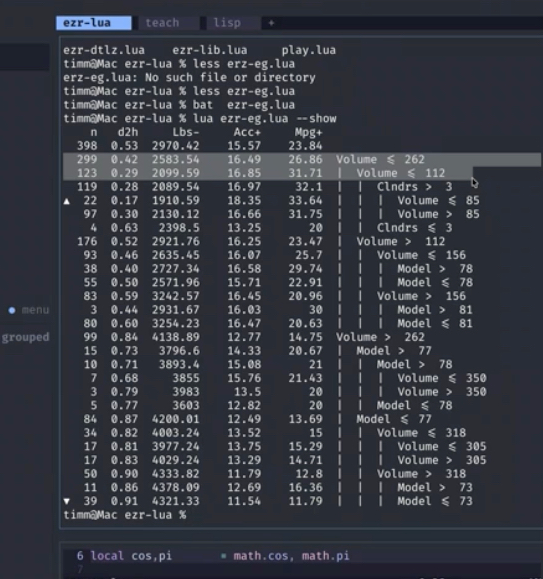

hello.md delta
What the Aug 17 2026 lecture said that hello.md does not. Source: Panopto transcript, compared against hello.md. Fold these in next time hello.md is rewritten.
New rat trick: active learning (label less, learn more)
Do not learn from all the data. Build a tiny model, then use it to carefully select what to label next. This way we get to ignore the uninformative, noisy, superfluous, redundant data — which, in practice, is most of the data. Active learners build competent models from just a handful of examples (the ~50 from the maths below), even when exploring tens of thousands of variables. In class this got a long riff (the used-car lot: X values are free to see, Y values cost a test drive) that the current "Pick your battles" section only hints at. Promote it to a trick of its own.
New rat trick: check the straw men
Always baseline the sophisticated thing against the dumbest possible thing. "My career is my straw men": again and again the simple baseline turns out to be good enough, and the ceremony of the complex method was not worth it. Related to, but distinct from, reuse-then-refactor: that trick shrinks code you keep; this trick deletes methods you never needed.
New SE rat trick: exploit the repeated structure of SE data
Why does simple keep winning on software data? Because software is built to be maintained by someone else, so it is written in expected patterns — it has nothing like the variability of natural phenomena (for a truly natural process, go to the center of the sun). Quote Prem on the naturalness hypothesis (Hindle, Barr, Su, Gabel & Devanbu, CACM 2016):
"Programming languages, in theory, are complex, flexible and powerful, but, 'natural' programs, the ones that real people actually write, are mostly simple and rather repetitive; thus they have usefully predictable statistical properties that can be captured in statistical language models and leveraged for software engineering tasks."
Intro additions
- The 1986 origin story: Australia, second AI winter, farm-herd profitability in dollars per square meter per day; experts running fingers down columns of abnormal runs; the runs-language whose output beat the experts who fed it their knowledge. Hooked ever since.
- Bainbridge, Ironies of Automation (1983): automate the easy parts and humans keep the hard residue plus a monitoring role they are cognitively bad at (~30 minutes of useful attention). Modern form: "Have you watched a Claude loop run? You are now a Bainbridge person."
- The junior-programmer pipeline: LLMs replace juniors, not seniors; ask any company how it will find seniors in ten years if nobody trains juniors — no answer. Train the reviewers, not the reviewed.
- Jevons paradox, the "even if you reject every bubble argument" closer: cheaper coal burned more coal; the new expressway is the new traffic jam; cheap AI ends up scarce.
"Keep it simple, keep it stochastic" additions
- Random does not mean crazy: a random variable comes from a known distribution with a mean and a variance — structure you can exploit.
- PSO as a maintenance model: the particles never stop, so when the world changes the swarm re-converges. That is the interesting property, not the flocking.
- Augment with the surprise result: trees learned from ~50 carefully selected examples, converted into a tree less than 20 lines long, tame problems with thousands of columns and tens of thousands of rows.
"Near enough" maths-section additions
- Reward-free RL made concrete: an autonomous car with a 20-year life must satisfy laws not yet written — that is why it costs 10^15 samples.
- Best-arm made concrete: Las Vegas, one slot machine slightly biased; knowing the goal is what collapses 10^15 to ~10^4.
- Label cost made concrete: human experts label about ten examples an hour, then get called away; rush them and the labels rot.
Meteorite-list additions
EU specifics beyond the AI Act link: moving data between France and Germany is already a regulated act; Europe pulling back from US clouds on the fear that Microsoft hands German data to the American government.
New section after the intro: a sampler of the methods
Show, do not promise. The live demo: `lua ezr-eg.lua --show` on auto93 — 398 cars, baseline means on row one, best row marked with an up-arrow, worst with a down-arrow, constraints accumulating down the tree, each split holding half the data. Then the 5,000-row configuration data set where 3 of 17 choices control everything. "In 30 years of software analytics: a small number of variables matter, and the rest can go to hell." Screenshot saved at tree-demo.png:
{kind=link}

(This content lived in the retired l0.md; nothing on the current site teaches how to read the tree.)
Bookkeeping when rewriting
- "Four rat tricks" becomes seven (reuse/refactor; simple and stochastic; near enough; seams; + active learning; check the straw men; exploit SE structure). Fix the summary paragraph and the "here are four rat tricks" line.
- Separate note: in class the 491 project was described as a neurosymbolic coding task (combine symbolic and neural at a seam; few histograms; no report). uproj.md still says shrinking-code demos. Reconcile.